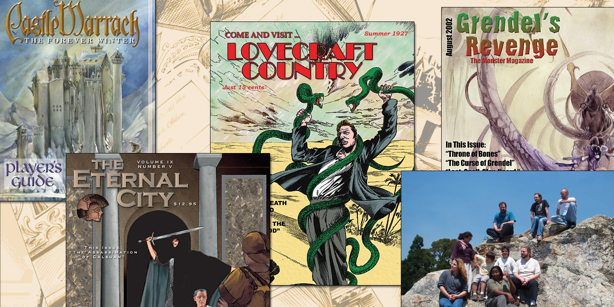

Goodbye from Skotos
 Skotos was founded in 1999 with a goal of creating "multiplayer interactive fiction on the Internet". We wanted to make games that were more social, more dynamic, more interactive, more realistic, and more story-focused than anything that had been seen before. As with any endeavor, some projects fell by the wayside, and others prospered. Our flagship game, Castle Marrach launched on September 21, 2000.
{kind=link}
In the couple of years that followed, we surged forward with all of the excitement and enthusiasm of a dot-com company at the turn of the century. We brought in expert designers from the roleplaying field, hired Brian Moriarty, a legend of the interactive-fiction community, made connections with existing roleplaying publishers, and published columns by masters in the field such as Richard Bartle and Jessica Mulligan.
And, we continued to launch games. Many of our earliest releases were strategy games that were focused on building a larger gaming community, such as Galactic Emperor: Hegemony, Droidarena, Space Federation, and the early Days of Wonder games. However, these half-dozen associate games were just the appetizer: roleplaying and storytelling games were always the main course. The Eternal City was our second roleplaying game: it had already been a top roleplaying game produced by Worlds Apart before it joined the Skotos community. In the years that followed we launched Grendel's Revenge, Lovecraft Country, Ironclaw Online, and The Lazarus Project.
Skotos never grew as big as our initial dreams. The communities never exceeded a few hundred people each. But those communities were vibrant and exciting, and they told the stories that we'd always dreamed of. Today, they've been telling those stories for twenty years. We've joined in, just the least bit, with our Castle Marrach comic and our Lovecraft Country comic, but following the release of our games, the creativity and continuity of these communities has mainly been thanks to the players. Thank you!
We've now reached the twentieth anniversary of Skotos, and it's a time of change — and just as we've long promised in Castle Marrach, we hope this marks a New Spring. We are closing the Skotos site, but in doing so we are also releasing our games to the world. Four of Skotos' past games have been running independently for a few months now. We invite you to visit them, and become a part of their stories:
We've also spent much of this year releasing our core Chat Theatre technology as open source, so that you can create games of your own. Finally, we'll be maintaining an archive of our popular articles. Long live SkotOS! Long live eOS! And thank you for 20 years of support.Signing Off,
Christopher Allen
Shannon Appelcline
September 21, 2020
And thanks to our initial team of Pär Winzell, Lisa Disterheft, and Michael Blum, our longest serving engineer Erwin Harte, and the many others who made Skotos great.